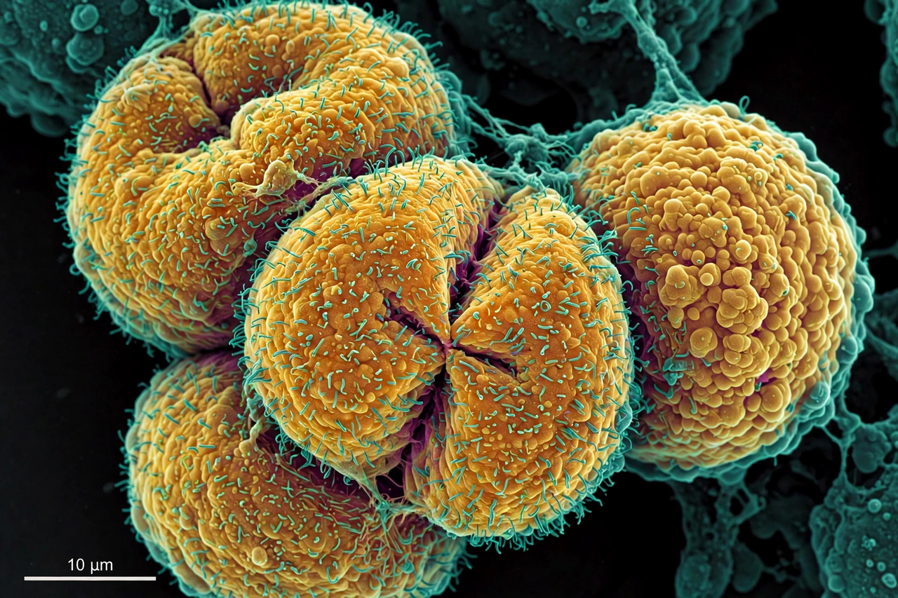

Cancer
From Wikipedia, the free encyclopedia
| Cancer | |
|---|---|
 | |
| Specialty | Oncology |
| Symptoms | Lump, abnormal bleeding, prolonged cough, unexplained weight loss, change in bowel habits |
| Risk factors | Tobacco, obesity, poor diet, infections, radiation, inherited mutations, age |
| Treatment | Surgery, radiation therapy, chemotherapy, targeted therapy, immunotherapy |
| Global burden | ~20 million new cases and ~10 million deaths annually (recent estimates) |
Cancer is a group of diseases involving abnormal cell growth with the potential to invade or spread to other parts of the body. These contrast with benign tumours, which do not spread. Cancers arise when accumulated genetic mutations disable the normal controls on cell division, allowing cells to proliferate, evade cell death, recruit blood vessels (angiogenesis), and metastasise.
Causes and biology
Cancer is fundamentally a disease of the genome. Mutations in oncogenes (such as RAS and MYC) and tumour suppressor genes (such as TP53 and BRCA1) are driven by carcinogens including tobacco smoke — responsible for roughly a fifth to a third of cancer deaths — ultraviolet and ionising radiation, certain infections (human papillomavirus, hepatitis B and C, Helicobacter pylori), alcohol, obesity and inherited predisposition. The "hallmarks of cancer" framework of Hanahan and Weinberg catalogues the acquired capabilities that malignant cells share. Immune evasion lets tumours escape surveillance; modern immunotherapies, including checkpoint inhibitors and CAR-T cells, exploit the immune system, while many targeted drugs are biopharmaceuticals such as monoclonal antibodies.
Classification and staging
Cancers are classified by the tissue of origin: carcinomas (epithelial), sarcomas (connective tissue), leukaemias (blood-forming), lymphomas (lymphatic), and central nervous system cancers. The TNM system stages disease by tumour size, nodal involvement and metastasis, guiding prognosis and treatment.
Diagnosis, treatment and prevention
Diagnosis rests on imaging, biopsy and histopathology, increasingly supplemented by molecular profiling. Treatments include surgery, radiotherapy, cytotoxic chemotherapy, hormone therapy, targeted small molecules and immunotherapy, often combined. Prevention — tobacco control, vaccination against HPV and hepatitis B, screening programmes (mammography, colonoscopy, cervical cytology) — can avert a substantial fraction of cases. See also acute medical emergencies for one treatment complication context, and cartilage for chondrosarcoma origins.